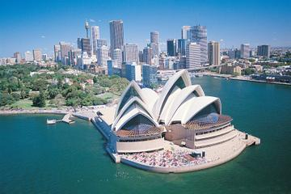

About Us!
This site has been working in collaboration with the City of Sydney to present information about some of Sydney's greatest landmarks and attractions. A range of information will be provided, including the history of the attraction, the location and some general information. This information is super handy if you're a tourist or new to Sydney. We have all the information that you'll need.
Attractions that are featured in this site are:
- Sydney Harbour Bridge
- Opera House
- Sydney Tower
- Bondi Beach
With all this information on Sydney's greatest sites. We're sure that you'll know everything that you need to know. Sydney has so much to offer and with our help, you can make the most of it. So enjoy yourself and embrace Australia's world famous, harbour-side city. Sydney will be the one place that you'll want to keep coming back to.
